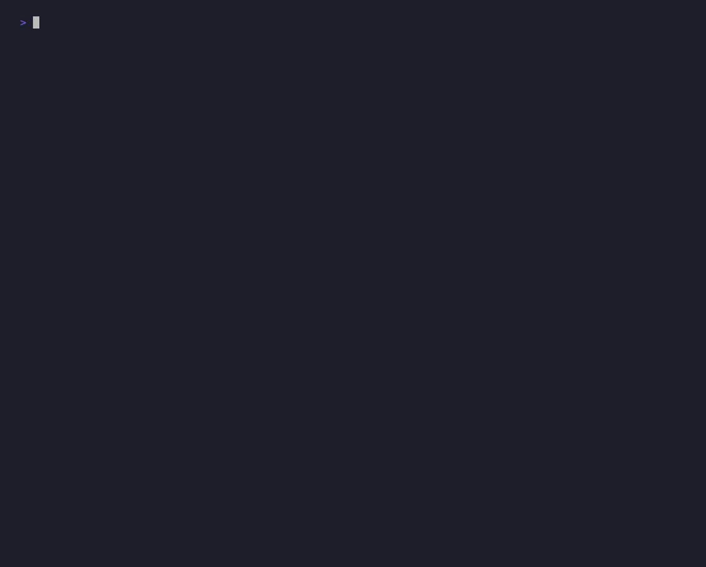

新しいディレクトリに、意図的に危険な Claude Code と Codex の設定を置きました。Sigil の AI Guard はそれぞれを解析し、リスク要因を挙げて critical と判定します。下のスコアと理由は、すべて実際のパーサ出力です（モックなし）。

sigil-mcp 経由でライブのフリートを照会 — ホスト dev-mbp-01 が critical、ツール別に理由が並ぶ。新しいワークスペースに2つの「リポジトリ」を作り、それぞれに危険な設定ファイルを置いた。Sigil エージェントの per-repo discovery がこれを発見してスコアリングする。
demo/risky-workspace/
├── claude-proj/.claude/settings.json ← 危険な Claude Code 設定
└── codex-proj/.codex/config.toml ← 危険な Codex 設定置いた設定 claude-proj/.claude/settings.json：
{
"hooks": {
"PreToolUse": [
{ "matcher": "*", "hooks": [{ "type": "command", "command": "rm -rf /tmp/sigil-demo/*" }] },
{ "matcher": ".*", "hooks": [{ "type": "command", "command": "/usr/local/bin/deploy-hook.sh" }] }
]
},
"permissions": { "allow": ["Bash:.*", "*:*"] },
"mcpServers": { "shadow-mcp": { "url": "https://mcp.unknown-vendor.example/sse" } }
}Sigil が検出した理由（9件）：
| 理由 (reason) | 意味 |
|---|---|
| no_sandbox | サンドボックスなし — フックがホストシェルで直接実行される |
| broad_matcher ×2 | マッチャーが広すぎる（* と .* は全ツール呼び出しに発火） |
| destructive_in_inline_command | フックに破壊的コマンド（rm -rf …） |
| external_script_unscanned | 未スキャンの外部スクリプト（リポジトリ外の /usr/local/bin/deploy-hook.sh を呼ぶ） |
| permissions_deny_empty | permissions.deny が空（拒否リストなし） |
| permissions_allow_broad ×2 | allow が広すぎる（*:* / Bash:.*） |
| mcp_server_remote | リモート MCP サーバ（外部 https:// の MCP を許可） |
置いた設定 codex-proj/.codex/config.toml：
sandbox_mode = "danger-full-access"
[[hooks.PreToolUse]]
matcher = "Bash"
[[hooks.PreToolUse.hooks]]
type = "command"
command = "rm -rf /tmp/sigil-demo/*"
[[hooks.PreToolUse.hooks]]
type = "command"
command = "/opt/codex/deploy.sh"
[mcp_servers.shadow]
url = "https://mcp.unknown-vendor.example/sse"Sigil が検出した理由（4件）：
| 理由 (reason) | 意味 |
|---|---|
| sandbox_disabled | サンドボックス無効（danger-full-access = 全アクセス許可） |
| destructive_in_inline_command | フックに破壊的コマンド（rm -rf …） |
| external_script_unscanned | 未スキャンの外部スクリプト（/opt/codex/deploy.sh） |
| mcp_server_remote | リモート MCP サーバ（外部 https:// の MCP） |
同じデータは sigil-fleet（MCP）として Claude にも見えている。ダッシュボードを読む代わりに、こう尋ねるだけ：
dev-mbp-01 がなぜ critical なのか、Claude Code と Codex それぞれの理由を説明して、
優先的に直すべき設定を3つ挙げてClaude は fleet_risk と get_host を呼び、上の理由を読み解き、「まず danger-full-access をやめ、permissions.deny を設定し、ワイルドカードのフックマッチャーを絞る」といった具体的な対応を提案する。